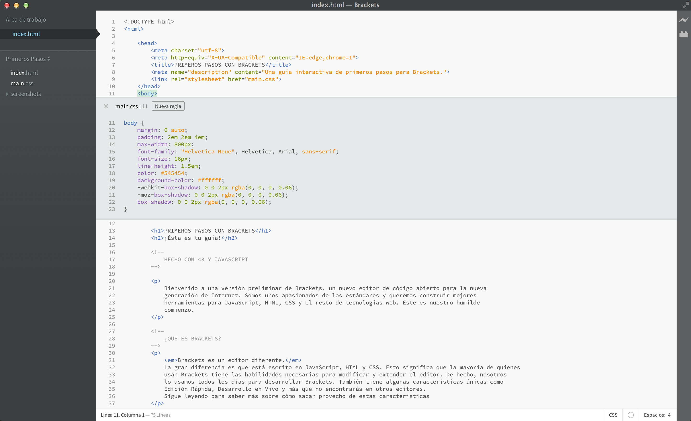

Bienvenido a Brackets, un nuevo editor de código abierto que entiende el diseño web. Es un editor de código liviano y potente al mismo tiempo que incluye herramientas visuales dentro del mismo para que puedas obtener la ayuda qu e necesites cuando la necesites.
Brackets es un editor diferente. Brackets tiene varias características únicas como la Edición rápida y la Vista previa dinámica y muchas más que no vas a encontrar en otros editores. Además, Brackets está escrito en JavaScript, HTML y CSS. Esto significa que la mayoría de quienes usan Brackets tienen las habilidades necesarias para modificar y extender el editor. De hecho, nosotros usamos Brackets todos los días para desarrollar Brackets. Para saber más sobre cómo utilizar estas características únicas, continúa leyendo.
Para poder editar tu propio código en Brackets, puedes simplemente abrir la carpeta que contiene los archivos. Brackets considera a la carpeta abierta como el "proyecto"; características como las Sugerencias de código, la Vista previa dinámica y la Edición rápida solo utilizan los archivos contenidos dentro de la carpeta actualmente abierta.
Una vez que estés listo para salir del proyecto de ejemplo y editar tu propio código, puedes usar el menú despegable en la barra de la izquierda para cambiar de carpeta. En estos momentos, el menú despegable dice "Primeros Pasos" - la cual es la carpeta que contiene el archivo que estás viendo en estos momentos. Haz clic en el menú despegable y selecciona "Abrir carpeta…" para abrir tu carpeta. También puedes usar el menú despegable para abrir las carpetas que abriste recientemente, incluyendo este proyecto de ejemplo.Se acabó aquello de estar saltando de documento en documento perdiendo de vista lo que estás haciendo. Mientras estás escribiendo HTML, usa el atajo de teclado Cmd/Ctrl + E para abrir un editor rápido en línea con todo el contenido CSS relacionado. Ajusta tu CSS y oprime ESC para volver a tu HTML, o simplemente mantenga las reglas CSS abiertas para que pasen a formar parte de tu editor de HTML. Si pulsas ESC fuera de un editor rápido, todos se cerrarán a la vez. La edición rápida también funciona con archivos LESS y SCSS, incluyendo las reglas anidadas.
¿Quieres verlo funcionando? Coloca tu cursor sobre la etiqueta y oprime Cmd/Ctrl + E. Deberías ver aparecer un editor rápido de CSS más arriba, mostrando la regla de CSS que le afecta. La edición rápida funciona también en atributos de tipo clase e id. También puedes utilizarlo en tus archivos LESS o SCSS. Puedes crear nuevas reglas de la misma manera. Haz clic en una de las etiquetas de más arriba y oprime Cmd/Ctrl + E. Todavía no hay reglas para ese elemento, pero puedes hacer clic en el botón Nueva Regla para añadir una nueva regla a las etiquetas . También puedes usar el mismo atajo para editar otras cosas--como funciones en JavaScript, colores y funciones de temporización de animaciones--y estamos añadiendo más y más continuamente.
Por ahora, no se pueden anidar editores en línea, por lo que sólo puedes usar la característica de Edición Rápida cuando el cursor está en un editor "completo".
¿Conoces ese baile de "guardar/recargar" que llevamos años haciendo? ¿Ése en el que haces cambios en tu editor, oprimes guardar, cambias al navegador y recargas para por fin poder ver el resultado? Con Brackets, ya no tienes que hacerlo.
¡Brackets abrirá una conexión en vivo con tu navegador local y le enviará los cambios en el archivo HTML y CSS conforme escribas! Puede que ya estés haciendo algo parecido con las herramientas de desarrollo del navegador, pero con Brackets ya no necesitas copiar y pegar el código final de vuelta a tu editor. ¡Tu código se ejecuta en el navegador, pero vive en tu editor!
Brackets te ayuda a ver cómo los cambios en HTML y CSS afectan a tu página. Cuando tu cursor se encuentre sobre una regla de CSS, Brackets resaltará todos los elementos afectados en el navegador. Del mismo modo, cuando estés editando un archivo HTML, Brackets también resaltará los elementos correspondientes en tu navegador.
Si tienes instalado Google Chrome, puedes probarlo tú mismo. Haz clic sobre el icono del rayo de la esquina superior derecha o presiona Cmd/Ctrl + Alt + P. Cuando la Vista previa dinámica está funcionando en un documento HTML, todos los documentos CSS relacionados se pueden editar en tiempo real. El icono pasará de gris a dorado cuando Brackets consiga establecer una conexión con tu navegador. Ahora, coloca el cursor sobre la etiqueta que se encuentra un poco más arriba. Observa cómo aparece el resaltado azul alrededor de la imagen en Chrome. Luego, utiliza Cmd/Ctrl + E para abrir las reglas de CSS existentes. Intenta cambiar el tamaño del borde de 10px a 20px o el color del fondo de "transparent" a "hotpink". Si Brackets y tu navegador están funcionando en paralelo, verás los cambios reflejados de manera instantánea en tu navegador. Genial, ¿verdad?Actualmente, Brackets sólo soporta Vista previa dinámica para HTML y CSS. Aún así, en la versión actual, los cambios en archivos JavaScript son recargados automáticamente en el navegador cuando guardas. En estos momentos estamos trabajando en el soporte de Vista previa dinámica para JavaScript. Las actualizaciones automáticas sólo son posibles en Google Chrome, pero esperamos poder trasladar esta funcionalidad a todos los grandes navegadores.
Para aquellos que todavía no han memorizado las equivalencias de color entre Hex y RGB, Brackets permite ver exactamente qué color se está utilizando rápida y fácilmente. Tanto en CSS como en HTML, simplemente mueve el cursor sobre cualquier valor de color o gradiente y Brackets mostrará una previsualización del mismo de manera automática. Lo mismo sirve para imágenes: simplemente pasa el cursor sobre la dirección de una imagen en Brackets, y éste mostrará una vista en miniatura de la misma.
Para probar la previsualización tú mismo, coloca el cursor en la etiqueta al principio de este documento y oprime Cmd/Ctrl + E para abrir un editor CSS. Ahora, simplemente mueve el cursor sobre cualquiera de los colores dentro del CSS. También puedes verlo funcionando en gradientes abriendo un editor de CSS en la etiqueta y pasando el cursor por cualquiera de los valores para las imágenes de fondo. Para probar la vista previa de imágenes, coloca el cursor sobre la imagen incluida antes en éste documento.Además de todas las bondades naturales de Brackets, nuestra amplia y creciente comunidad de desarrolladores de extensiones ha creado cientos de extensiones que añaden útiles funcionalidades. Si hay algo que necesitas que Brackets no soporta, es bastante probable que alguien haya construido una extensión para ello. Para navegar o buscar en la lista de extensiones disponibles, selecciona Archivo > Gestionar extensiones... y haz clic en la pestaña "Disponibles". Cuando encuentres una que quieras, simplemente presiona el botón "Instalar" a su derecha.
Brackets es un proyecto de código abierto. Desarrolladores web de todo el mundo están contribuyendo a construir un mejor editor de código. Haznos saber lo que piensas, comparte tus ideas o contribuye directamente al proyecto.